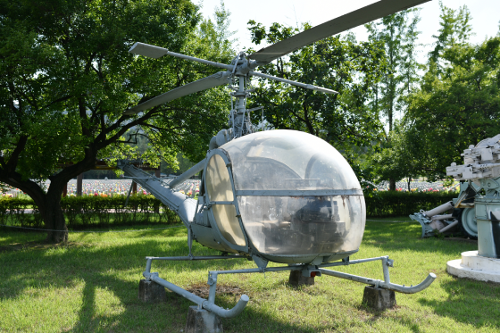
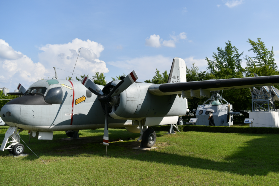

-
O-1경항공기
미국 CESSNA사, 1950년 제작. 1951년 2월 우리 육군 항공기로 취역. 6·25 전쟁 중에는 포병 사전 관측, 전방 감시 및 정보 획득 임무를 수행하였다. 전쟁 후 1980년 5월까지는 DMZ 감시 비행 및 인원 수송 임무를 수행하였으며, 그 후 육군항공학교에서 조종교육용으로 활용되던 중 퇴역하였다.
- 제원
-
- 너 비: 10.97m
- 길 이: 7.62m
- 높 이: 2.29m
- 무 게: 945kg
- 최대속도: 277km/h
- 항속거리: 840km
- 항속시간: 4.5시간
- 탑승인원: 2명
-
50MK26(함포)
이 포는 미국에서 1943년 12월 제작된 대공 대함용 함포로서 우리 해군에는 1950년 4월에 도입되었으며, 한국전쟁 시 한국 해군의 구축함 및 경비함에 설치되어 인천상륙작전을 비롯한 각종 해상작전의 주력 함포로서 공헌하였다.
- 제원
-
- 너 비: 1.66m
- 길 이: 4.11m
- 높 이: 2.21m
- 무 게: 3,546kg
- 최대발사속도: 16발/분
- 최대사정거리: 13,350m
- 탄약길이: 80cm
- 탄약무게: 16kg
-
8인치 곡사포 자주(M110)
자유롭게 움직일 수 있는 M4 전차를 변형하여 8인치 곡사포를 탑재한 포병용 화포로 미국에서 1957년에 개발, 월남전에서 최초 사용하였으며 우리 군은 1996년 육군에 자주포대대를 창설하면서 미군으로부터 인수받아 운용하였다.
- 제원
-
- 구 경: 203mm
- 길 이: 7.48m
- 무 게: 26.5ton
- 엔 진: 8기통
- 최대사거리: 16.8km
- 최대발사속도: 1.5발/분
- 최대주행속도: 56km/h
- 탑승인원: 5명
-
8인치 곡사포
이 장비는 1953년 미국 ARDECE(무기개발센터)로부터 도입되어 주로 3군지역 군단 포병대대에서 일반화력 지원을 통한 적 요새지 폭파용으로 사용되었다.
- 제원
-
- 길 이: 8.02m
- 포신길이: 5.14m
- 무 게: 14,515kg
- 포신무게: 4,644kg
- 발사속도: 최대 1.5발/분, 지속 0.5발/분
- 최대사거리: 16,926m
- 방 위 각: 좌우 30°
- 고 저 각: -2°~ 65°
- 견인차량: 10t
- 강 선 수: 64조 우선
-
105밀리 곡사포
대한민국 대한중기사, 1973년 제작. 제1차 세계대전 당시 최초로 사용되었으며, 제2차 세계대전 때에는 야전포병의 주무기로서 정확도, 발사속도, 신뢰도 면에서 위력을 발휘하였다. 우리 군이 이 포를 최초로 장비한 때는 1950년 한국전쟁 직전이었으나, 1973년도에 한국형 포로 개량 제작하여 야전 포병부대에 배치하였다.
- 제원
-
- 너 비: 2.1m
- 높 이: 6.0m
- 무 게: 2,250kg
- 발사속도: 3발/분
- 포구초속: 472m/s
- 최대사거리: 11.2km
-
106밀리 무반동총
이 장비는 1960년 미국 워터빌리티아스나社로부터 도입되어 보병사단 연대 및 기갑보병사단 화기소대에 배치하여 대전차용 무기로 사용되었다.
- 제원
-
- 길 이: 3.43m
- 무 게: 113.85kg
- 초 속: 503.25m
- 강 선 수: 36조 우선
- 총열수명: 3,000발
- 최대사거리: 7,677m
- 장갑관통력: 420mm
- 지상/차량 탑재운용 가능
-
F-4D(Phantom/전투기)
F-4 전투기는 미국 맥도널 더글러스(McDonnell Douglas)사에서 개발한 다목적 초음속 항공기로 1958년 5월 최초비행을 실시하였으며, ‘Phantom(도깨비)’이라고 불리고 있다. 대한민국 공군은 F-5A전투기 전력 보강 차원에서 ‘방위성금헌납기’ 5대를 포함해 1988년까지 총 74대를 도입하였다. F-4D전투기는 항공전력의 핵심기종으로서 방공, 요격, 근접지원, 후방차단 등 다양한 임무를 수행하였다. F-4D항공기는 약 40여년간 국내 영공방위의 임무를 성공적으로 완수하고 2010년 6월 공군 역사의 한 페이지를 장식하며 퇴역하였다.
- 제원
-
- 기장x기폭x기고: 18.8x11.5x4.9m
- 중량: 13,647kg
- 엔진: General Electric J79-GE-17터보제트
- 최대속도: 2,826km/h
- 순항속도: 630km/h
- 항속거리: 4,116km
- 상승한도: 29,865m
- 탑승인원: 2명
- 무장
-
- 공대공미사일: AJM-7Ex4 AJM-9N/px4
- 공대지미사일: AGM-65Bx6
- 정밀유도폭탄: GBU-10x4 GBU-12x6
-
F-5B(FREEDOM FIGHTER)
미국 NOTRTHROP사에서 1963년 제작. 애칭은 자유의 투사다. 1965년 3대를 시작으로 1976년까지 128대를 도입함으로써 한국 공군의 아음속에서 초음속으로 발전하는 계기가 된다. 1969년 소흑산도 간첩선 격침. 1970년 영덕 간첩선 격침 등 40년 동안 대한민국 영공방위임무를 완벽하게 수행하고 2005년 퇴역하였다.
- 제원
-
- 너 비: 7.7m
- 길 이: 14.4m
- 높 이: 4m
- 무 게: 3,667kg
- 최대속도: 1,763km/h
- 순항속도: 889km/h
- 항속거리: 3,074km
- 상승한도: 15,850m
- 탑승인원: 2명
-
F-86F(SABRE, 전투기)
미국 NORTH AMERICAN사에서 1950년 제작. 적진 폭격 및 촬영을 목적으로 제작된 항공기로써 6·25 당시 미공군이 사용하여 많은 전공을 남겼고 1955년 12월 우리 군에 인수되어 영공을 수호하다가 퇴역하였다.
- 제원
-
- 너 비: 11.9m
- 길 이: 11.4m
- 높 이: 4.5m
- 무 게: 6,883kg
- 최대속도: 1,056km/h
- 순항속도: 815km/h
- 항속거리: 2,408km
- 상승한도: 14,326km
- 탑승인원: 1명
-
LVT3C(수륙양용장갑차)
미국 해군 공작창, 1940년 제작. 제2차 세계대전 시 미군이 오키나와 전투에서 사용하였고, 1950년 9월 15일 인천상륙작전 시 우리 해병대원을 상륙시키는 데 큰 역할을 함
- 제원
-
- 너 비: 3.81m
- 길 이: 8.7m
- 높 이: 3.2m
- 무 게: 20.1t
- 육상속도: 25.7km/h
- 해상속도: 9.7km/h(궤도)
- 탑승인원: 28명
-
M46(전차)
미국 CHRYSLER사, 1952년 제작. 6·25전쟁 중 미군으로부터 인수하여 우리 군에 의해 사용된 당시의 최신 장비로서 남침하는 적의 병력 및 전차부대 격퇴에 큰 공을 세움.
- 제원
-
- 너 비: 3.5m
- 길 이: 6.33m
- 높 이: 2.89m
- 무 게: 44t
- 최대속도: 48km/h
- 항속거리: 128km
- 탑승인원: 5명
-
M113(장갑차)
미국 FMC사, 1960년 제작. 무게가 가볍고 동체가 낮아 인원 및 화물수송용으로 사용되며 지상이나 수중에서 궤도를 움직여 전진 및 방향전환이 가능하다. 1967년 우리 군에 도입하여 기계화 보병부대의 주력장비로 배치하였다.
- 제원
-
- 너 비: 2.5m
- 길 이: 4.8m
- 높 이: 2m
- 무 게: 4,140kg
- 최대속도: 64.4km/h
- 탑승인원: 2명
-

OH-23G(RAVEN, 헬기)
미국 HILLER사(기체), LYCOMING(엔진) 제작. 1971년 5월 15일 미군으로부터 우리 육군에 인수되어 지역 정찰 및 관측과 의무수송 등에 사용되었다. 1984년부터 육군항공학교에서 조종교육용으로 활용되다가 퇴역하였다.
- 제원
-
- 너 비: 2.38m
- 길 이: 8.32m
- 높 이: 3.08m
- 무 게: 1,287kg
- 날개직경: 10.79m
- 최대시속: 153km/h
- 항속거리: 340km
- 탑승인원: 3명
-

S-2E(해상초계기)
일명 ‘바다의 추적자’로 알려진 이 항공기는 고성능 전자장비와 자기탐지기 등을 갖춘 전천후 해상초계기이다. 미국 GRUMMAN사가 대잠수함 해상초계 및 공격용으로 제작하였으며, 우리 해군에는 1976년 8월 23일에 도입되어 1994년 11월 15일까지 운용되었다.
- 제원
-
- 너 비: 21.3m
- 길 이: 12.8m
- 무 게: 13,220kg
- 최대속도: 522km/h
- 항속거리: 2,500km
- 탑승인원: 4명
- 탐지장비: 레이다, 전자장비, 음향분석장비, 자기탐지기
- 무장장비: 로켓, 어뢰, 기뢰, 조명탄, 음탐부표
-
T-28A(TROJAN, 훈련기)
미국 NORTH AMERICAN사에서 1950년 제작, 1960년 12월 우리 군에 도입되었다. 1968년 청와대 무장공비 소탕작전에서 정찰 및 긴급연락 등 임무를 수행하였으며, 그 후 조종사 양성훈련, 전술통제임무를 수행하다가 1989년 4월 퇴역하였다.
- 제원
-
- 너 비: 12.4m
- 길 이: 10.5m
- 높 이: 3.8m
- 무 게: 2,286kg
- 최대속도: 456km/h
- 순항속도: 306km/h
- 항속거리: 1,630km
- 상승한도: 8,839m
- 탑승인원: 2명
-
T-33A(훈련 및 대지 공격기)
미국 LOCKHEED사에서 1954년 제작. 1955년 8월 공군의 제트화를 위해 F-86과 함께 도입된 한국 공군 최초의 제트 훈련기로서 도입 초기에는 훈련기로만 사용되었으나 1970년 6월부터는 기관총과 로켓을 장착, AT-33 전술기로 이름지어져 대간첩작전 등에 활용되었다.
- 제원
-
- 너 비: 11.7m
- 길 이: 11.3m
- 무 게: 6,854kg
- 최대시속: 918km
- 항속거리: 9,157km
- 탑승인원: 2명
-
T-37C훈련기(Tweet/훈련기)
T-37C훈련기는 미국 CESSNA사에서 개발한 제트 기본 훈련기로 1954년 최초비행을 실시하였다. 1977년까지 1,268대를 생산하였으며 C형은 WING TIP에 TANK와 무장 장착이 가능하도록 설계되었다. 한국 공군은 1973년 6월 7일 F-5 및 F-4 계열의 전초훈련기로서 T-37C 8대를 최초 도입한 이래 1975년까지 25대를 군원(軍援)으로 도입하여 중등비행훈련용으로 활용하였다. 1980년 11월 브라질 공군에서 운영하던 39대를 국제입찰로 추가 확보함으로써 총 64대의 T-37C훈련기를 운용하였다. 2004년 1월 17일 순수 국산 기술로 개발에 성공한 KT-1 기본 훈련기와 임무교대식을 마치고 동년 2월 28일 퇴역하였다.
- 제원
-
- 기장x기폭x기고: 8.97x10.93x2.7m
- 중 량: 8,000Lbs(3,629kg)
- 엔 진: TELEDYNE J69-T-25A
- 최대속도: 707km/h
- 순항속도: 426km/h
- 항속거리: 1,200km
- 상승한도: 13,503m
- 탑승인원: 2명
- 무장
-
- 기관총: 7.62mm x 2
- 로케트: LAU-68 x 2
- 폭 탄: 250파운드 x 2
-
U-6(BEAVER, 경항공기)
캐나다 DE_HAVIL LAND사, 1956년 제작. 전령, 공수낙하병 등 병력 수송과 환자 수송 및 수색, 정찰 임무를 수행하던 항공기로 육군항공단에서 퇴역하였다.
- 제원
-
- 너 비: 14.63m
- 길 이: 9.27m
- 높 이: 3.87m
- 무 게: 2,295kg
- 최대시속: 203km
- 탑승인원: 6명
-
U-17(SKY WAGON, 경항공기)
미국 CESSNA사, 1967년 제작. 해군 항공단 창설과 함께 인수되어 공중정찰, 병력수송, 업무연락 및 가벼운 화물수송 등의 임무를 수행하다가 퇴역하였다.
- 제원
-
- 너 비: 10.92m
- 길 이: 7.85m
- 높 이: 2.36m
- 무 게: 1,519kg
- 최대시속: 336km
- 탑승인원: 6명
-
경장갑차
이탈리사 FIAT사, 1960년 제작. 병력이 탑승한 상태에서 관측과 전투를 할 수 있는 4륜 전구동식 수륙양용 경장갑차로서 우리 군에는 1977년에 도입되어 도심지 방어용으로 사용되었다.
- 제원
-
- 너 비: 2.5m
- 길 이: 5.86m
- 높 이: 1.78m
- 무 게: 8.4ton
- 엔 진: 6기통 디젤
- 등판능력: 60%
- 최대시속: 100km/h
- 탑승인원: 11명
-
기본호크유도탄(XMIM-23B)
미국 RAYTHEON사, 1960년 제작. 저/중고도로 공격하는 공중 표적으로부터 지정된 시설이나 지역에 대한 방공임무를 수행하는 무기로 1964년 우리 군에 인수되어 방공포사에 배치되었고, 1983년 유도탄 개량으로 퇴역하였다.
- 제원
-
- 길 이: 5.5m
- 직 경: 35.5cm
- 고 도: 18km
- 속 도: 마하3.7
- 무 게: 637kg
- 사 거 리: 40km
- 비행시간: 110초
- 폭파반경: 37m
-
나이키유도탄(NIKE MISSILE)
미국 WESTERN ELECTRIC사, 1957년 제작. 우리 국군에는 1960년에 도입되어 중/고고도로 공격하는 적 비행물체 파괴 및 중요 목표물에 대한 지대지 임무를 수행하였다.
- 제원
-
- 길 이: 11.8m
- 무 게: 4,787kg
- 상승고도: 30km
- 유도탄 속도: 마하3.4
- 유효 사거리: 지대공 155km, 지대지 183km
-
닻(ANCHOR)
항구나 얕은 바다에서 함선을 정박시키거나 계류용 부이(BUOY)를 고정시키는 장구이며, 닻과 함선/부이는 닻줄(ANCHOR CHAIN)로 연결된다. 이 닻은 함선을 계류시키기 위한 부이를 해저에 고정시키는데 사용되며 1945년에 제작되어 인천함에서 사용되었다. 닻은 해군의 상징물로 널리 알려져있다.
- 제원
-
- 너 비: 1.5m
- 길 이: 2.3m
- 높 이: 1.3m
- 무 게: 3,000kg
-
대공포(M450D)
제2차 세계대전 때 미국에서 개발된 대공화기로서 트럭에 장착하여 사용되며, 도하능력과 기동성이 뛰어나 공중 및 지상표적에 대해 효과적으로 대응할 수 있는 무기다. 1970년 우리 군 장비 현대화 계획에 의거하여 미국으로부터 도입되었다.
- 제원
-
- 너 비: 1.4m
- 높 이: 1.91m
- 무 게: 1,116kg
- 고 저 각: -10°~ 90°
- 방향이동: 360°
-
사격통제용레이다(MK25R/D)
미국 GENERAL ELECTRIC사, 1944년 제작. 구축함에 탑재하여 적의 수상표적을 탐색, 추적하는 장비로서 우리 해군에는 1973년에 도입되어 5"/38함포 사격통제 장비로 사용되었다.
- 제원
-
- 너 비: 3.2m
- 길 이: 4.2m
- 높 이: 4.5m
- 무 게: 15ton
- 추정방식: 탐색, 포착, 추적
- 최대추적거리: 91,440km
- 추적가능속도: 1,482m/h
 8인치 곡사포 자주(M110)자유롭게 움직일 수 있는 M4 전차를 변형하여 8인치 곡사포를 탑재한 포병용 화포로 미국에서 1957년에 개발, 월남전에서 최초 사용하였으며 우리 군은 1996년 육군에 자주포대대를 창설하면서 미군으로부터 인수받아 운용하였다.
8인치 곡사포 자주(M110)자유롭게 움직일 수 있는 M4 전차를 변형하여 8인치 곡사포를 탑재한 포병용 화포로 미국에서 1957년에 개발, 월남전에서 최초 사용하였으며 우리 군은 1996년 육군에 자주포대대를 창설하면서 미군으로부터 인수받아 운용하였다. 105밀리 곡사포대한민국 대한중기사, 1973년 제작. 제1차 세계대전 당시 최초로 사용되었으며, 제2차 세계대전 때에는 야전포병의 주무기로서 정확도, 발사속도, 신뢰도 면에서 위력을 발휘하였다. 우리 군이 이 포를 최초로 장비한 때는 1950년 한국전쟁 직전이었으나, 1973년도에 한국형 포로 개량 제작하여 야전 포병부대에 배치하였다.
105밀리 곡사포대한민국 대한중기사, 1973년 제작. 제1차 세계대전 당시 최초로 사용되었으며, 제2차 세계대전 때에는 야전포병의 주무기로서 정확도, 발사속도, 신뢰도 면에서 위력을 발휘하였다. 우리 군이 이 포를 최초로 장비한 때는 1950년 한국전쟁 직전이었으나, 1973년도에 한국형 포로 개량 제작하여 야전 포병부대에 배치하였다. F-4D(Phantom/전투기)F-4 전투기는 미국 맥도널 더글러스(McDonnell Douglas)사에서 개발한 다목적 초음속 항공기로 1958년 5월 최초비행을 실시하였으며, ‘Phantom(도깨비)’이라고 불리고 있다. 대한민국 공군은 F-5A전투기 전력 보강 차원에서 ‘방위성금헌납기’ 5대를 포함해 1988년까지 총 74대를 도입하였다. F-4D전투기는 항공전력의 핵심기종으로서 방공, 요격, 근접지원, 후방차단 등 다양한 임무를 수행하였다. F-4D항공기는 약 40여년간 국내 영공방위의 임무를 성공적으로 완수하고 2010년 6월 공군 역사의 한 페이지를 장식하며 퇴역하였다.
F-4D(Phantom/전투기)F-4 전투기는 미국 맥도널 더글러스(McDonnell Douglas)사에서 개발한 다목적 초음속 항공기로 1958년 5월 최초비행을 실시하였으며, ‘Phantom(도깨비)’이라고 불리고 있다. 대한민국 공군은 F-5A전투기 전력 보강 차원에서 ‘방위성금헌납기’ 5대를 포함해 1988년까지 총 74대를 도입하였다. F-4D전투기는 항공전력의 핵심기종으로서 방공, 요격, 근접지원, 후방차단 등 다양한 임무를 수행하였다. F-4D항공기는 약 40여년간 국내 영공방위의 임무를 성공적으로 완수하고 2010년 6월 공군 역사의 한 페이지를 장식하며 퇴역하였다. 경장갑차이탈리사 FIAT사, 1960년 제작. 병력이 탑승한 상태에서 관측과 전투를 할 수 있는 4륜 전구동식 수륙양용 경장갑차로서 우리 군에는 1977년에 도입되어 도심지 방어용으로 사용되었다.
경장갑차이탈리사 FIAT사, 1960년 제작. 병력이 탑승한 상태에서 관측과 전투를 할 수 있는 4륜 전구동식 수륙양용 경장갑차로서 우리 군에는 1977년에 도입되어 도심지 방어용으로 사용되었다.